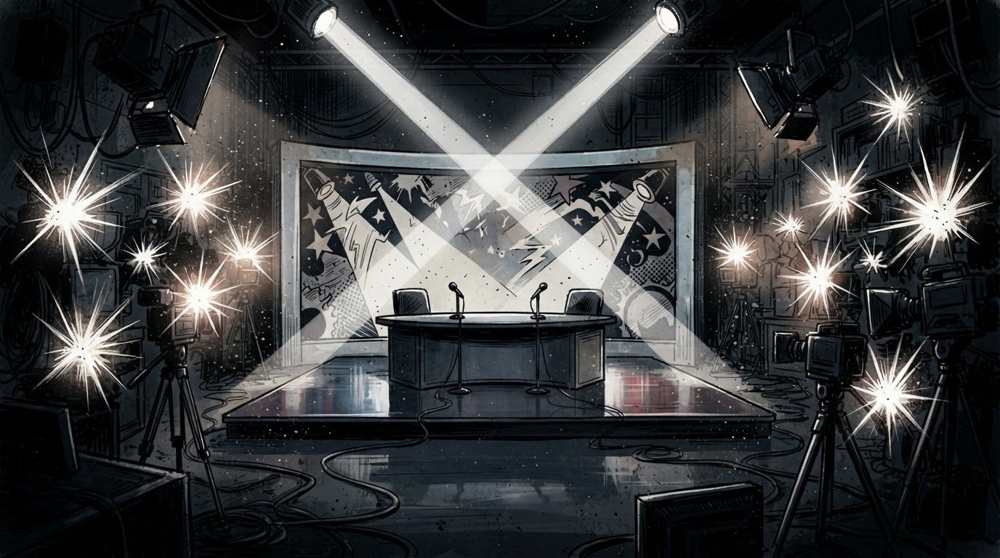

BBVK5
Sezoni i ri
Showbiz
Gazeta Satirike e Kosovës dhe Shqipërisë — lajme që nuk duhet t'i besoni, por i lexoni gjithsesi
Diagnoza mjekësore-showbizistike e javës: gjaknxehtësia, e cila prek pikërisht personat me kamera pranë.

Showbizi rajonal ka zbuluar një sëmundje të re, e cila prek ekskluzivisht persona me kontrata televizive: gjaknxehtësia e sipërt. Simptomat: një shpullë, disa tituj gazetash dhe një konferencë për shtyp të organizuar brenda 48 orëve.
"Nuk e njihja fare personin", tha protagonisti i skenës, duke shpjeguar në të njëjtën fjali si e njihte mjaftueshëm për t'u konfliktuar me të fizikisht. Redaksia jonë e quan këtë "paradoksi i njohjes së shpejtë" — një koncept që funksionon vetëm në rrjete sociale dhe në studio televizive.
"Ka qenë vetëm një herë me shpullë — sikur numri të ndryshojë diçka nga ana ligjore." — një ekspert imagjinar i "etikës televizive"
Sipas modelit standard të showbizit rajonal, çdo incident kalon nëpër tri faza: video e rrjedhur, deklaratë "s'ka qenë ashtu si duket", pastaj deklaratë e dytë "më vjen keq nëse dikush u lëndua" — pa e specifikuar kush dhe si. Këtë radhë, procesi u përshpejtua ndjeshëm falë prezencës së kamerave brenda vetë seancës.
Ndërkohë, publiku ndau menjëherë në dy kampe: ata që besojnë "gjaknxehtësinë" si shkak shkencor dhe ata që kërkojnë të dinë pse kjo sëmundje shfaqet gjithmonë pikërisht para se kamerat të fiken.
Deri sa çështja të zgjidhet zyrtarisht, redaksia jonë rekomandon çdo qytetar që ndjen "gjaknxehtësi e sipër" ta zgjidhë atë me një gotë ujë të ftohtë, jo me konferencë shtypi.